183 — Acoplamiento, cohesión, modularidad y fronteras
Parte: 15 — Arquitectura de sistemas e ingeniería de requisitos
Nivel: intermedio-avanzado · Horas estimadas: 4
Laboratorio: architecture · Estado: EXECUTABLE_CORE
🎯 Propósito
Decidir dónde va cada frontera, que es la decisión más cara de cambiar de todas las que se toman. La clase define acoplamiento y cohesión con precisión suficiente para discutirlos, enumera las siete formas de acoplamiento por orden de coste, y sostiene con la evidencia del programa que la frontera correcta la marca quién escribe cada dato y a qué ritmo cambia cada cosa, no la descomposición funcional que sale sola al mirar el organigrama.
📚 Resultados de aprendizaje
Al finalizar podrás:
- Distinguir los siete tipos de acoplamiento y ordenarlos por coste.
- Medir la cohesión de un módulo con criterios comprobables.
- Situar fronteras usando escritura de datos y ritmo de cambio.
- Reconocer las fronteras mal puestas por sus síntomas.
- Decidir cuándo mover una frontera y cuánto cuesta hacerlo.
🧩 Conceptos centrales
| Concepto | Comprensión verificable |
|---|---|
acoplamiento |
Medida de cuánto obliga un cambio en A a cambiar B. No es malo por sí mismo; lo caro es el tipo equivocado. |
cohesión |
Medida de cuánto pertenecen juntas las cosas de un módulo. Alta cohesión: cambian por el mismo motivo. |
acoplamiento por datos |
Dos módulos escriben el mismo almacén. El más caro y el más invisible. |
ritmo de cambio |
Frecuencia con que se modifica una parte. Partes con ritmos muy distintos no pertenecen al mismo módulo. |
frontera |
Línea que separa lo que se despliega, versiona y decide por separado. |
coste de mover una frontera |
Lo que cuesta cambiarla más tarde. Determina cuánto cuidado merece la decisión inicial. |
🧠 Modelo mental
Una arquitectura es un conjunto de decisiones sobre estructuras, interfaces y atributos de calidad, respaldadas por escenarios y evidencia.
Aplicado a esta clase, separa siempre cuatro planos: intención (qué necesita el usuario), configuración (qué declaramos), estado observado (qué existe de verdad) y evidencia (cómo sabemos que cumple). Confundirlos produce diseños que se ven correctos en un diagrama pero fallan al operar.
🗺️ Flujo de razonamiento

📖 Desarrollo
1. Acoplamiento: siete tipos, por coste
Decir «hay que reducir el acoplamiento» no ayuda: todo sistema útil está acoplado. Lo que importa es de qué tipo, porque el coste varía en dos órdenes de magnitud.
1 POR MENSAJE A publica un evento; B lo consume
coste de cambio bajo; el contrato es explícito
se rompe con cambiar el esquema del evento clase 148
2 POR PARÁMETRO A llama a B pasando datos
coste bajo
3 POR CONTRATO DE API A depende de la forma de la API de B
coste medio; gestionable con versiones
4 TEMPORAL A necesita que B esté vivo AHORA
coste medio-alto; hereda disponibilidad
síntoma una caída de B tira A clase 185
5 POR DESPLIEGUE hay que subir A y B a la vez
coste alto; elimina la autonomía
síntoma «no puedo desplegar hasta que ellos»
6 POR CONOCIMIENTO A sabe cómo funciona B por dentro
coste alto; se rompe sin avisar
síntoma un cambio interno de B rompe A
7 POR DATOS A y B escriben el mismo almacén
coste el más alto de todos
síntoma nadie puede cambiar el esquema
invisible no aparece en el código de ninguno
Y la observación que este programa ha repetido desde la clase 147:
los seis primeros son visibles: están en el código
el séptimo NO, y por eso sobrevive años ley 21
→ dos servicios «independientes» que escriben la misma
tabla no son dos servicios: son uno mal repartido
Y una consecuencia práctica que se usa como regla de diseño:
se puede convertir acoplamiento caro en barato
7 → 1 un solo escritor, y los demás reciben eventos
5 → 3 contrato versionado en vez de despliegue conjunto
6 → 3 API explícita en vez de conocimiento interno
4 → 1 asíncrono donde la operación lo permita clase 118
y cada conversión cuesta latencia, consistencia o complejidad
→ no se hacen todas: se hacen donde el cambio duele
2. Cohesión: qué pertenece junto
La cohesión se explica mal con definiciones abstractas y bien con una pregunta:
¿estas dos cosas cambian por el mismo motivo?
sí pertenecen juntas
no no, aunque traten del mismo sustantivo
Y el error clásico es agrupar por sustantivo:
«todo lo de Cliente va en el servicio de Cliente»
→ datos de contacto cambian por marketing
→ preferencias cambian por producto
→ historial de pagos cambian por finanzas
→ consentimientos cambian por legal
cuatro motivos de cambio, cuatro equipos, un solo módulo
→ cada despliegue toca lo de los otros tres
Los criterios de cohesión que se pueden comprobar, no opinar:
1. MOTIVO DE CAMBIO
mira los últimos 50 cambios del módulo
→ si vienen de tres áreas distintas de negocio, no hay cohesión
2. RITMO DE CAMBIO
mide cuántas veces al mes cambia cada parte
→ si una cambia 8 veces y otra 1 al trimestre, sepáralas
3. QUIÉN LOS PIDE
si los cambios vienen de equipos distintos, la frontera
está en el sitio equivocado ley 21
4. QUÉ SE ROMPE JUNTO
si un fallo en una parte no afecta a la otra, no comparten
destino y podrían separarse
Y una medida directa que se saca del historial y casi nadie mira:
CAMBIOS ACOPLADOS
¿qué porcentaje de los cambios a A tocan también a B?
> 60 % A y B deberían estar juntos
10-60 % frontera dudosa, mírala
< 10 % frontera bien puesta
se calcula del historial del repositorio, en minutos
Y la asimetría que hay que recordar:
demasiados módulos coste de coordinación, latencia,
operación clase 184
demasiado pocos coste de coordinación humana
y despliegues bloqueados
→ el óptimo no es «más pequeño»; es «cambia junto, va junto»
3. Dónde va la frontera de verdad
La descomposición funcional —reservas, pagos, catálogo— sale sola, y casi siempre está a medio camino de la correcta. Los tres criterios que la corrigen, por orden de fuerza:
1. QUIÉN ESCRIBE CADA DATO ley 21
un dato, un escritor
→ si dos módulos necesitan escribir lo mismo, o son uno
solo o el dato está mal definido
→ este criterio, solo, coloca la mayoría de las fronteras
2. RITMO DE CAMBIO
lo que cambia 8 veces al mes no vive con lo que cambia
una vez al trimestre
→ aunque traten del mismo sustantivo
3. LO QUE DEBE FALLAR JUNTO
si A no tiene sentido sin B, sepáralos con cuidado:
estás creando acoplamiento temporal clase 185
Y tres criterios que se usan mucho y funcionan mal:
EL ORGANIGRAMA
produce fronteras que reflejan la empresa de hoy
→ y la empresa se reorganiza antes que el software
→ aunque la ley de Conway es real: si el organigrama y la
frontera se pelean, gana el organigrama ley 21
EL SUSTANTIVO DE NEGOCIO
«Cliente», «Producto», «Pedido»
→ agrupa cosas que cambian por motivos distintos
EL TAMAÑO
«que ningún servicio pase de N líneas»
→ optimiza una medida sin relación con el coste ley 17
Los síntomas de una frontera mal puesta, que se detectan sin discutir:
hay que desplegar dos cosas juntas para que funcione
un cambio pequeño requiere tocar tres repositorios
la mayoría de los cambios cruzan la frontera
dos equipos se bloquean en el mismo fichero
hay que preguntar a otro equipo qué significa un campo
dos servicios escriben el mismo almacén
un servicio hace una llamada por elemento a otro clase 124
la frontera exige transacción distribuida clase 149
Y el último es el más informativo:
si mantener la corrección exige una transacción a través de
la frontera, la frontera está en el sitio equivocado
→ mueve la frontera, no añadas coordinación distribuida
Cuándo mover una frontera y cuánto cuesta:
MOVER HACIA DENTRO (juntar dos módulos) barato
suele ser mecánico; se pierde autonomía
MOVER HACIA FUERA (separar uno en dos) caro si hay datos
si comparten almacén, hay que dividir datos, y eso es
lo más caro que existe clase 147
REGLA PRÁCTICA
ante la duda, EMPIEZA JUNTO y separa cuando el ritmo de
cambio o el escritor lo exijan
→ juntar lo separado es más barato que separar lo junto
Y la lista de comprobación de la clase:
☐ está identificado el tipo de acoplamiento de cada relación
☐ ningún almacén tiene más de un escritor
☐ se ha medido el porcentaje de cambios acoplados
☐ se ha medido el ritmo de cambio de cada parte
☐ ninguna frontera exige transacción distribuida
☐ ninguna frontera obliga a desplegar dos cosas juntas
☐ las fronteras no se copiaron del organigrama sin pensar
☐ se sabe el coste de mover cada frontera
☐ ante la duda, se empezó junto
Y el cierre que enlaza con la clase siguiente: sabiendo dónde van las fronteras, queda decidir cuántas unidades desplegables las materializan —una, unas pocas o muchas— y esa es una decisión distinta y con su propio coste. Es la materia de la clase 184.
4. Modularidad sin repartir en servicios
Una confusión frecuente y cara: frontera no significa servicio. Se puede tener modularidad estricta dentro de un solo despliegue, y suele ser la mejor opción durante años.
LO QUE DA LA FRONTERA MODULAR (mismo despliegue)
claridad de propiedad
un escritor por dato
contratos internos explícitos
posibilidad de separar después
LO QUE AÑADE SEPARAR EN SERVICIOS
despliegue independiente
escalado independiente
aislamiento de fallo
y a cambio: red, latencia, consistencia eventual,
operación, y coordinación clase 184
Y el modo de mantener fronteras dentro de un mismo despliegue, que es lo que las hace reales:
cada módulo con su propio esquema o su propio conjunto de tablas
prohibida la consulta cruzada; se pide por la interfaz del módulo
el acceso a datos de otro módulo NO compila
→ paquetes internos, reglas de dependencia, análisis estático
cada módulo tiene dueño escrito
y sus cambios se revisan por ese dueño
Y la comprobación que dice si la frontera modular es real o decorativa:
¿se podría sacar este módulo a su propio despliegue en una
semana, sin tocar los demás?
sí la frontera es real
no es una carpeta con un nombre bonito
Y una advertencia con evidencia de este programa:
las fronteras que solo existen por convención se erosionan
→ alguien hace una consulta cruzada «solo esta vez»
→ y a los dos años hay 7 clase 179
→ si no lo impide el compilador o la revisión, ocurrirá
🔬 Ejemplo trabajado
El equipo de reservas decide dónde van sus fronteras. Lo que sigue es el análisis de acoplamiento con datos del repositorio, el rechazo de la descomposición que salía sola, y las cuatro fronteras que resultaron.
Punto de partida: la descomposición funcional obvia.
Reservas · Pagos · Catálogo · Precios · Clientes · Notificaciones
Y parecía correcta hasta que se miraron dos datos que están en el repositorio y no requieren opinión.
Dato 1: cambios acoplados, últimos 12 meses.
pares que cambian juntos % de cambios
Reservas × Pagos 71 %
Catálogo × Precios 64 %
Reservas × Notificaciones 6 %
Catálogo × Clientes 3 %
Precios × Reservas 38 %
Y la lectura:
Reservas y Pagos cambian juntos el 71 % de las veces
→ separarlos crea dos repositorios que hay que tocar a la vez
→ NO son dos módulos: son uno
Catálogo y Precios, 64 %
→ lo mismo
Precios × Reservas, 38 %
→ zona dudosa; hay que mirar por qué
Dato 2: ritmo de cambio y origen de los cambios.
parte cambios/mes los pide
reglas de precios 9 producto y revenue
disponibilidad 1 operaciones
flujo de reserva 2 producto
coordinación de pago 1 finanzas
plantillas de aviso 6 marketing
datos de contacto 4 marketing
consentimientos 1 legal
Y aquí apareció la contradicción con el dato 1:
Precios cambia 9 veces al mes; Catálogo, 1
→ el 64 % de cambios acoplados NO significa que pertenezcan
juntos: significa que cada cambio de precio obligaba a tocar
el catálogo
→ y al mirar por qué: los precios estaban GUARDADOS en la tabla
de catálogo
el acoplamiento era del tipo 7, por datos, disfrazado
Dato 3: quién escribe cada almacén, del diagrama de la clase 182.
tabla escritores
reservas API, trabajos programados, facturación
catálogo catálogo, precios
clientes API, importación de marketing
inventario gestor de hoteles, trabajos programados
Y cuatro almacenes con más de un escritor, que es donde estaba el problema real.
Las decisiones, con el criterio de la clase.
DECISIÓN 1 Reservas y Pagos van JUNTOS
motivo 71 % de cambios acoplados; y la corrección exige
transacción entre ambos
alternativa descartada separarlos con saga
por qué la compensación habría hecho invisible el fallo
cuando el pago se confirma y la reserva no ley 19
coste de cambio si nos equivocamos medio
DECISIÓN 2 Precios SALE de Catálogo
motivo 9 cambios/mes frente a 1; equipos distintos
cómo catálogo deja de guardar el precio; precios tiene
su propio almacén y publica un evento de cambio
convierte acoplamiento 7 → 1
coste alto: hay que migrar el dato ← se hace pronto
DECISIÓN 3 Clientes NO se parte por sustantivo
motivo contacto (4/mes, marketing), consentimientos
(1/mes, legal) y preferencias cambian por motivos
distintos
cómo tres módulos con esquemas separados DENTRO del
mismo despliegue, cada uno con dueño
por qué no tres servicios el tráfico no lo justifica y la
operación costaría más que la autonomía que da
coste de separarlos después bajo: ya tienen esquema propio
DECISIÓN 4 Notificaciones queda separada
motivo 6 % de cambios acoplados, y ya era asíncrona
confirma la frontera existente estaba bien puesta
Los escritores, después:
tabla escritor único
reservas servicio de reservas y pagos
facturación → recibe evento, ya no escribe
trabajos programados → 4 retirados; 3 pasan por la API
catálogo servicio de catálogo
precios servicio de precios ← nuevo
clientes.contacto módulo de contacto
clientes.consentimientos módulo de consentimientos
inventario servicio de catálogo
gestor de hoteles → escribe por la API, no directo
Cómo se hicieron reales las fronteras dentro del despliegue de clientes, que es lo que evita que se erosionen:
tres esquemas separados en la misma base
nadie consulta el esquema de otro módulo
→ usuario de base de datos por módulo, con permisos solo
sobre su esquema; la consulta cruzada FALLA, no se detecta
en revisión
reglas de dependencia en el análisis estático
cada módulo con dueño en el fichero de propiedad
Y la comprobación de la clase, aplicada:
¿se podría sacar contacto a su propio despliegue en una semana?
→ sí: esquema propio, sin consultas cruzadas, contrato claro
→ la frontera es real
Lo que costó equivocarse una vez. La primera propuesta separaba Reservas y Pagos:
se llegó a implementar la saga durante 3 semanas
se abandonó al hacer la prueba negativa: al fallar el paso de
confirmación, la compensación cancelaba el pago y el cliente
recibía dos correos contradictorios
coste del error 3 semanas
cómo se detectó prueba negativa
qué lo habría evitado mirar el 71 % de
cambios acoplados
ANTES de diseñar
La lección que esta clase deja: dos datos que ya estaban en el repositorio —qué cambia junto y a qué ritmo— corrigieron una descomposición funcional que parecía obvia, y el acoplamiento más caro del sistema no estaba en ninguna llamada: estaba en que el precio vivía en la tabla del catálogo. Ningún diagrama de servicios lo habría mostrado.
🧪 Laboratorio guiado
Ejecuta desde la raíz:
python classes/part-15-systems-architecture-engineering/183-acoplamiento-cohesion-modularidad-y-fronteras/lab.py
El laboratorio selecciona el motor de práctica architecture y produce
lab_result.json. El escenario, sus comprobaciones y el artefacto esperado corresponden a
esta clase; no requiere credenciales y deja explícito qué debe revalidarse en un sandbox real.
- Lee
exercise.stepsy formula una predicción antes de ejecutar. - Ejecuta la práctica y verifica todos los elementos de
checks. - Provoca el caso de
negative_testy explica la señal observada. - Materializa
module-mapenevidence/usando la plantilla indicada. - Para proveedor real, sigue
sandbox.requires, registra costo y ejecutadestroy.
Evidencia esperada
El artefacto principal es un diagrama acompañado por decisiones y trade-offs. Además, la entrega debe incluir el comando ejecutado, la salida estructurada y una conclusión que no exceda lo observado.
🏆 Reto verificable
Construye module-map para el caso CloudShop. Incluye una alternativa descartada,
un supuesto que pueda falsarse, una prueba de fallo y una decisión de rollback.
✅ Criterio de aceptación
- [ ]
lab.pytermina con código 0 y genera JSON válido. - [ ] La entrega conecta al menos tres requisitos con mecanismos verificables.
- [ ] Existe una prueba positiva y una prueba negativa con evidencia.
- [ ] Seguridad, costo y operación aparecen como decisiones, no como anexos.
- [ ] Se declara una limitación y una condición que obligaría a revisar el diseño.
- [ ] Otra persona puede repetir el recorrido sin conocimiento tácito.
⚠️ Errores frecuentes
| Síntoma | Causa probable | Corrección |
|---|---|---|
| Dos servicios «independientes» no pueden cambiar de esquema sin coordinarse | Acoplamiento por datos: ambos escriben el mismo almacén | Un escritor por dato; los demás reciben eventos. Convierte el acoplamiento tipo 7 en tipo 1. |
| Un cambio pequeño obliga a tocar tres repositorios | La frontera cruza justo por donde ocurren los cambios | Calcula el porcentaje de cambios acoplados del historial; por encima del 60 % esas partes van juntas. |
| Un módulo se despliega constantemente por culpa de una parte que cambia mucho | Se agrupó por sustantivo y no por motivo ni ritmo de cambio | Separa lo que cambia 8 veces al mes de lo que cambia una vez al trimestre, aunque compartan nombre. |
| Mantener la corrección exige una transacción distribuida | La frontera está en el sitio equivocado | Mueve la frontera en vez de añadir coordinación distribuida y compensaciones. |
| Las fronteras modulares se erosionan y aparecen consultas cruzadas | Solo existían por convención | Haz que la consulta cruzada falle: esquemas y usuarios de base separados, reglas de dependencia en el análisis estático. |
| Separar un módulo resulta muchísimo más caro de lo previsto | Compartía almacén y hay que dividir datos | Ante la duda empieza junto: juntar lo separado es más barato que separar lo junto. |
🛡️ Seguridad, ética y costo
Trabaja con cuentas propias o sandboxes autorizados. No publiques secretos, identificadores reales ni datos personales. Antes de crear recursos pagos define presupuesto, etiquetas y comando de destrucción; después verifica que no queden recursos huérfanos. Los ejemplos locales enseñan contratos, pero no certifican cumplimiento ni disponibilidad de producción.
❓ Preguntas de comprobación
- ¿Cuál de los siete tipos de acoplamiento es el más caro y por qué es invisible?
- ¿Qué mide el porcentaje de cambios acoplados y cómo se obtiene?
- ¿Por qué agrupar por sustantivo de negocio suele dar mala cohesión?
- ¿Qué indica que una frontera está mal puesta si exige transacción distribuida?
- ¿Qué comprobación dice si una frontera modular es real o decorativa?
🔗 Referencias
- Parnas, D. L. (1972). On the criteria to be used in decomposing systems into modules. https://dl.acm.org/doi/10.1145/361598.361623
- Newman, S. (2019). Monolith to Microservices — acoplamiento por datos y cómo dividirlo. https://www.oreilly.com/library/view/monolith-to-microservices/9781492047834/
- Tornhill, A. (2018). Software Design X-Rays — cambios acoplados medidos sobre el historial. https://pragprog.com/titles/atevol/software-design-x-rays/
- Evans, E. (2003). Domain-Driven Design — contextos delimitados y sus fronteras. https://www.oreilly.com/library/view/domain-driven-design-tackling/0321125215/
- Conway, M. (1968). How do committees invent? — la frontera y el organigrama. https://www.melconway.com/Home/Committees_Paper.html
- Documentación oficial vigente del servicio implementado; registra URL y fecha de consulta.
📥 Descargar: Parte 15 en PDF · Manual integral